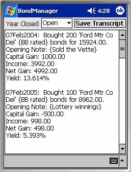
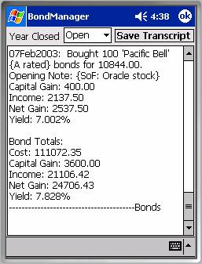
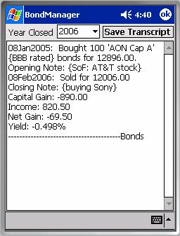
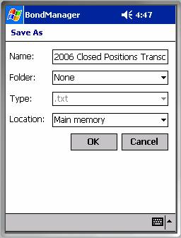

Positions TranscriptsThe Positions Transcripts dialog collects information for all open positions or for all positions closed within a given calendar year and presents a textual report summarizing the activity. Of course, they are useful as journals at tax time, but transcripts also serve as a faster means of reviewing the current state of capital gains, coupon income, annualized yields, etc. because scrolling a plain text window is faster than scrolling a list control and you can see the derivative data all at once so you don’t have to scroll right and left to get a picture of what’s going on.

Year ClosedThe ‘Year Closed’ combo-box allows you to choose between ‘Open’ and any years for which closed positions exist. If there is only one year, e.g. all positions are active (open) or all closed positions were closed in the same year, then that year’s positions will be loaded by default. If there are open and closed positions, Open positions will be loaded by default. Otherwise the most recent year’s transcript will be loaded by default.
In the example above right, you can see the first two journal entries from the list of open positions. Each entry includes: an opening date, the number of bonds purchased, the bond identifier, the description associated with the bond definition, the total cost of the position, any note you may have created with the position, and derivative information including capital gain, income, net gain, and the annualized yield represented by the net gain. Coupons from the purchase date to the present date contribute to the income

figures. Portfolio totals for cost, capital gain, income, and net gain are posted below the positions listed in the transcript. The cost weighted annualized yield of all positions in the transcript completes the picture.A transcript of closed positions is shown at right. It adds the closing date and closing note entered at the time the position was closed to the information associated with an open position.
The transcript displayed is not saved to a file until you choose to do so manually.
The ‘Save Transcript’ button allows you to save the transcript to a file, for review and editing outside BondManager and for upload to a desktop computer. The file dialog shown below is posted after clicking the Save Transcript button. It allows you to save the transcript to the file name of your choosing.

Database TraversalThe Positions Transcripts dialog traverses the database differently than other tools in BondManager. Other BondManager tools access positions through the bond definition, since each tracks its own list of positions.
Positions transcripts are generated by bypassing all of the instrument definitions and directly accessing the portfolio positions. This approach has both tactical and strategic advantages. From a tactical perspective, it saves CPU time (something that should always be conserved on a Pocket-PC platform) which might otherwise be wasted inspecting instrument definitions that don’t have associated positions.
From a strategic perspective, directly accessing the portfolio positions enhances robustness by potentially salvaging position information from a partially corrupted database. Hopefully, you’ll never have to find out whether this capability actually saves your bacon or not.
The downside of initially bypassing the instrument definitions is that positions associated with a particular issue won’t necessarily be contiguous in the transcript. The order in which the journal entries appear is generally the order in which you created the positions, except that space occupied by closed and deleted positions is recycled by subsequently created positions. For example, if you create twenty positions in your portfolio before deleting the second one ever created and then create a new position, the new one will appear second when you generate an open positions transcript. Given the benefits of efficient CPU utilization and the potential to salvage a corrupt database, journal entry disorder was viewed as a reasonable inconvenience. Tax agencies care more about completeness than order, and that’s what the transcript is intended to address.